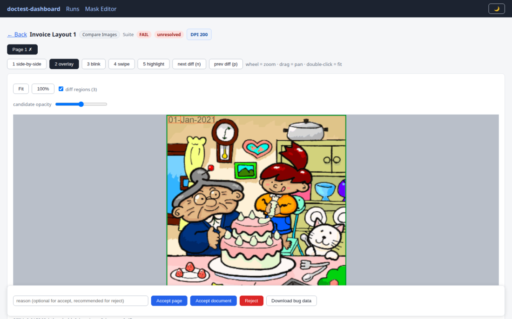
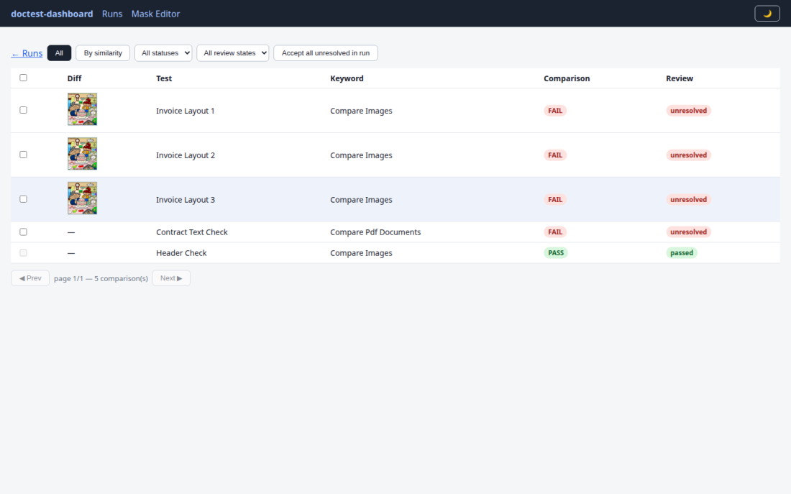
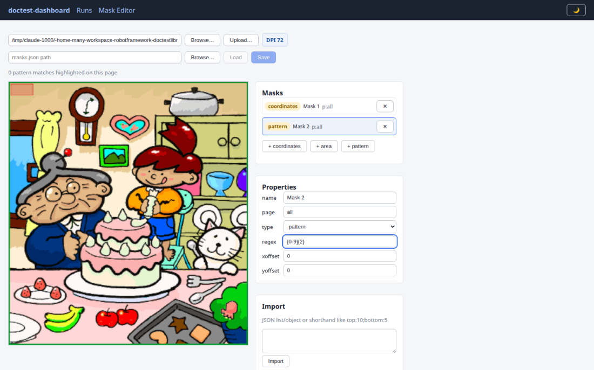
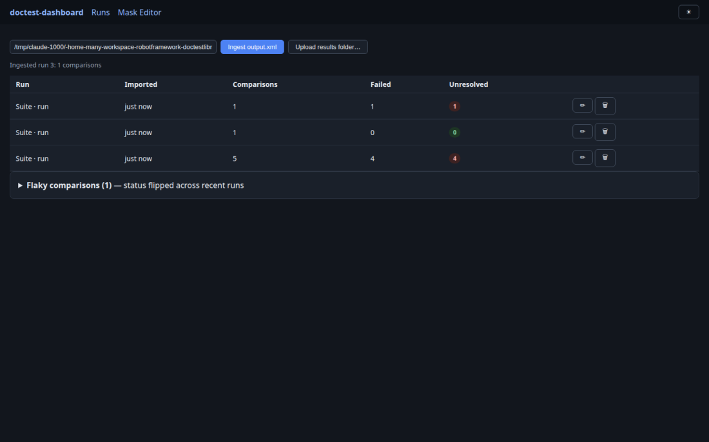

One engine, every visual check
A single comparison engine — SSIM plus pixel analysis, masks, movement tolerance and OCR — powers document testing, print-job verification and full web visual regression, all reviewable in the same dashboard.
Precise comparisons
Structural similarity with diff regions, thresholds, pixel budgets and anti-aliasing awareness — not just “images differ”.
Smart masking
Ignore dynamic content by coordinates, page areas, OCR text patterns, watermark files — or live web locators.
Baselines as files
Plain PNGs in your repo. Auto-created on first run, updated by reference runs or one-click dashboard accepts.
Root-cause answers
Diff regions explain what changed: extracted text differences, movement detection, DOM verdicts, per-facet PDF diffs.
Stability built in
Capture retry, stable-capture detection, cross-browser anti-aliasing classification — flake dies in the library, not in your suite.
Self-hosted & free
No SaaS, no upload, no per-screenshot pricing. Everything runs on your machine and CI.
Install what you need
| Install | Adds | Notes |
|---|---|---|
pip install robotframework-doctestlibrary |
VisualTest · PdfTest · PrintJobTests · WebVisualTest | Web visual testing needs no extra dependencies — it drives the web library you already use. |
…[dashboard] | doctest-dashboard web app | Review, baseline management, mask editor, CI gate. |
…[ai] | LLM-assisted comparisons | Configure via DOCTEST_LLM_*. |
…[browser] / …[selenium] | robotframework-browser / SeleniumLibrary | Convenience one-liners for web testing. |
…[all] | ai + dashboard | Web drivers stay an explicit choice. |
Your first comparison
*** Settings *** Library DocTest.VisualTest *** Test Cases *** Invoice Looks As Approved Compare Images Reference.pdf Candidate.pdf Ignore The Date Stamp Compare Images Reference.png Candidate.png placeholder_file=masks.json
System dependencies (OCR, PostScript/PCL rendering): see the README install guide.
Document & image testing
The original strength: pixel-accurate comparison of images, PDFs, PostScript and PCL print jobs.
Visual comparison — DocTest.VisualTest
SSIM-based page comparison with highlighted diff regions,
threshold= sensitivity, move_tolerance= for shifted content
(template/ORB/SIFT/text detection), partial-image checks, blur and resize options, barcode reading
and watermark handling.
Masks for dynamic content
Coordinate rectangles (px/mm/cm), page-area shorthands (top:10;bottom:5),
OCR text-pattern masks that find and ignore matching text anywhere on the page,
and solid-black watermark template files.
PDF & print jobs
Compare Pdf Documents diffs text, metadata, fonts and structure with per-facet results;
PrintJobTests verifies PCL/PostScript properties.
*** Test Cases *** Moved Logo Within Tolerance Compare Images ref.png cand.png ... move_tolerance=20 Mask The Date By Text Pattern Compare Images ref.png cand.png ... mask={"type": "pattern", "pattern": "\d{2}-\w{3}-\d{4}"} Tolerate Tiny Rendering Noise Compare Images ref.png cand.png ... max_diff_ratio=0.001 ignore_antialiasing=True Check Pdf Content Compare Pdf Documents ref.pdf cand.pdf ... compare=text,metadata
Web visual testing
DocTest.WebVisualTest turns the engine into full visual regression
for web apps — capturing through the Browser Library (Playwright) or SeleniumLibrary
session your suite already runs. Auto-detected, zero added dependencies.
*** Settings *** Library Browser Library DocTest.WebVisualTest result_json=true *** Test Cases *** Checkout Page Looks Right New Page https://shop.example.com/checkout Compare Page To Baseline checkout ignore_elements=id=clock;css=.ad-banner Compare Element To Baseline id=price-table checkout-prices
Managed baselines
First run stores the capture as visual_baselines/checkout.png and warns; later runs compare. Update via REFERENCE_RUN or dashboard accept.
Ignore by locator
ignore_elements= masks live bounding boxes of dynamic elements at comparison time — baselines stay clean.
Flake-proof capture
Failing comparisons recapture until the page settles; every capture repeats until two consecutive shots are identical.
Cross-browser tolerant
ignore_antialiasing=True classifies rendering-edge noise — a chromium baseline passes under firefox, real changes still fail.
DOM-assisted verdicts
dom_analysis= stores semantic snapshots; accept_rendering_only= passes style-only changes while recording them for review.
Per-config baselines
split_baselines_by=browser,viewport keeps one baseline per browser and viewport, with separate history.
The visual review dashboard
A locally runnable web app (pip install …[dashboard]) that turns robot results
into a review queue: inspect diffs, accept new baselines, group similar failures, track history — no SaaS involved.
# run suites with result_json=true, then: doctest-dashboard serve # open http://127.0.0.1:8008 doctest-dashboard ingest results/output.xml doctest-dashboard gate latest # CI exit code on unreviewed failures




Accept / reject with audit trailSimilarity groupsCross-run historyFlaky detectionExplain region (text)Folder uploadCI gate
Full guide: dashboard.md.
AI-assisted judgment
With the [ai] extra, a vision model can review detected differences —
it sees the diff renderings plus, for web comparisons, the capture context and DOM verdict.
*** Test Cases *** Let The Model Judge Compare Images With LLM ref.pdf cand.pdf llm_override=${True} Web Comparison With AI Backstop Compare Page To Baseline home llm=True llm_override=True Ask The Document ${text}= Get Text With LLM invoice.pdf prompt=Return the total amount
Works with OpenAI-compatible endpoints and Azure OpenAI; decisions and reasoning are recorded in the result sidecar and shown in the dashboard. Everything degrades gracefully when unconfigured.